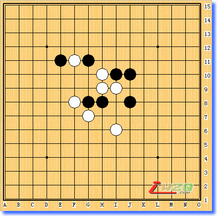
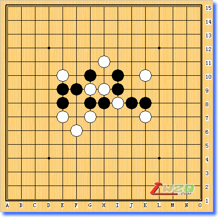
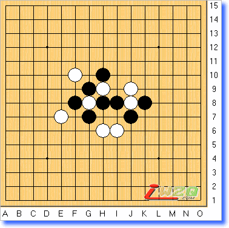
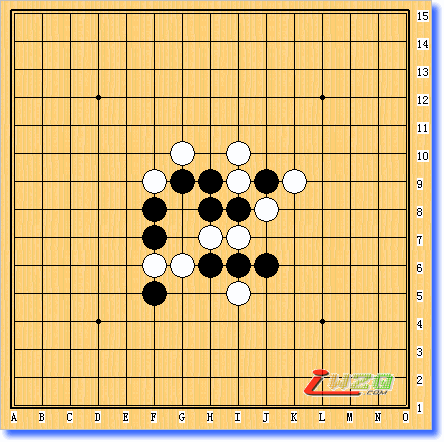
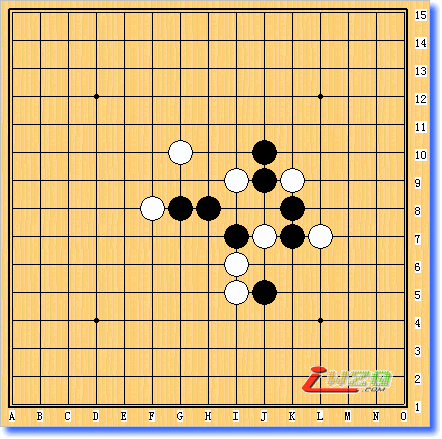
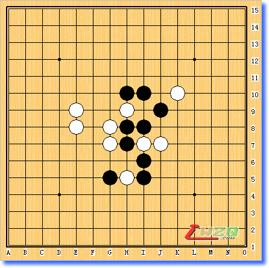
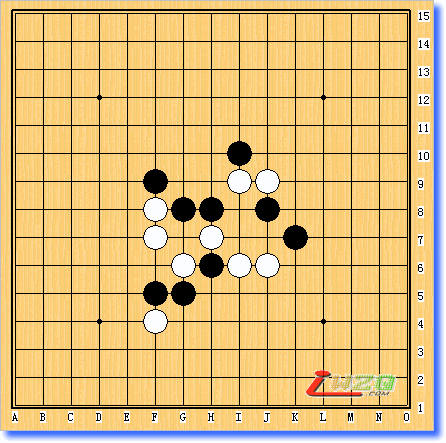
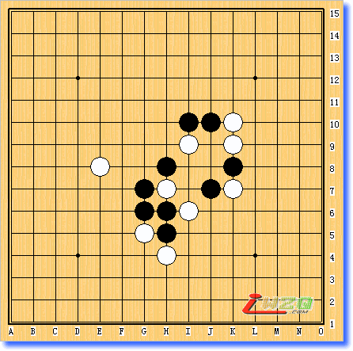
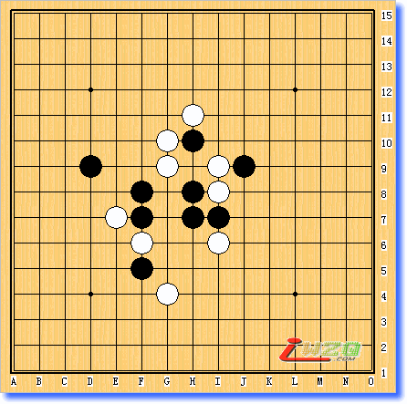
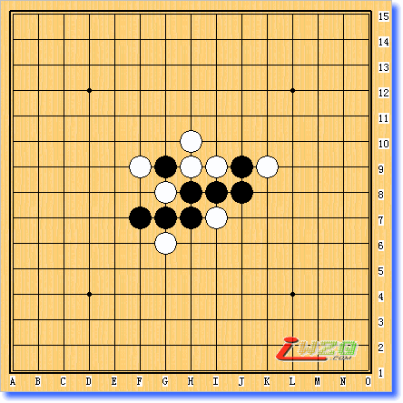

坂田吾朗三手胜全套在线习题集之[中级篇11-20题]
首页
定式及研究
#1 坂田吾朗三手胜全套在线习题集之[中级篇11-20题] 作者：有志青年 发表时间：2006-3-22 12:02:05
中级题第11问黑先如何胜？提示：当你想走一子双杀时，请再认真考虑一下，是否有更妙的进攻手段。

h8h9i10i9j8h10j10g7g8f8g11f11e11i6
#2 坂田吾朗三手胜全套在线习题集之[中级篇12题] 作者：有志青年 发表时间：2006-3-22 12:03:13
中级题第12问黑先如何胜？提示：如果白棋反活三防守，则黑棋有连冲胜。

h8h9g8g9i9i8g10h11f9e10e8e7e9f6i10g7j8k7k8k10
#3 坂田吾朗三手胜全套在线习题集之[中级篇13题] 作者：有志青年 发表时间：2006-3-22 12:04:39
中级题第13问黑先如何胜？提示：第一手棋如果按常规思路进攻，则白棋有妙防。

h8h9h10g8g9f10f8e7g7h6i8j9k8j8j7i6
#4 坂田吾朗三手胜全套在线习题集之[中级篇14题] 作者：有志青年 发表时间：2006-3-22 12:06:11
中级题第14问黑先如何胜？提示：第一手棋如果活三、冲四或者四三做杀的话，黑棋将难以取胜。

h8i9i8i10h9j8j9k9g9i7h6h7f8g10f7f9f5f6i6i5j6g6
#5 坂田吾朗三手胜全套在线习题集之[中级篇15题] 作者：有志青年 发表时间：2006-3-22 12:07:07
中级题第15问黑先如何胜？提示：如果没有发现白棋的妙防，说明黑棋看得不深入。

h8i9g8f8i7g10j9k9j10j7k8l7k7i6j5i5
#6 坂田吾朗三手胜全套在线习题集之[中级篇16题] 作者：有志青年 发表时间：2006-3-22 12:08:24
中级题第16问黑先如何胜？提示：用不同寻常的反击手攻防，黑棋将形成胜势。

h8h9h10g8i10g7i8e8h7e9j9k10i6i7i5j7g5h5
#7 坂田吾朗三手胜全套在线习题集之[中级篇17题] 作者：有志青年 发表时间：2006-3-22 12:09:48
中级题第17问黑先如何胜？提示：用拦截反击的方法进攻虽然不错，但是……

h8i9i10j9j8h7g8f8f9f7h6g6k7j6g5i6f5f4
#8 坂田吾朗三手胜全套在线习题集之[中级篇18题] 作者：有志青年 发表时间：2006-3-22 12:10:54
中级题第18问黑先如何胜？提示：仅仅第一手棋正确是不行的，以下的手顺也要用心计算。

h8h7h6i6g7e8g6g5h5h4j7k7k8k9j10i9i10k10
#9 坂田吾朗三手胜全套在线习题集之[中级篇19题] 作者：有志青年 发表时间：2006-3-22 12:11:57
中级题第19问黑先如何胜？提示：由于有陷阱，所以黑棋不彻底计算清楚就落子是相当危险的。

h8i9i7i8h7g9j9i6h10h11f8g10f7e7d9f6f5g4
#10 坂田吾朗三手胜全套在线习题集之[中级篇20题] 作者：有志青年 发表时间：2006-3-22 12:12:53
中级题第20问黑先如何胜？提示：第一手棋如果活三，黑棋将无胜。 h8h9i8i9j8g8j9k9g9h10g7f9f7g6h7i7
#11 Re:坂田吾朗三手胜全套在线习题集之[中级篇11-20题] 作者：qq4114 发表时间：2006-4-6 10:39:35
学习
#12 Re:坂田吾朗三手胜全套在线习题集之[中级篇11-20题] 作者：csir 发表时间：2008-1-30 3:22:34
?不能发
#13 Re:坂田吾朗三手胜全套在线习题集之[中级篇11-20题] 作者：csir 发表时间：2008-1-30 3:23:32
收藏！ 慢慢研究！
#14 Re:坂田吾朗三手胜全套在线习题集之[中级篇11-20题] 作者：吹过 发表时间：2008-3-16 19:39:29
看了少东西没留言,现在说句希望这个论坛越来越兴盛,五子棋也越来越受人喜爱.
#15 Re:坂田吾朗三手胜全套在线习题集之[中级篇11-20题] 作者：我能我能我能 发表时间：2009-8-22 23:59:34
http://tieba.baidu.com/f?kz=482923830这是三手胜的全部题的网址包括入门初级中级高级总共120题 而且可以手机直接看 这是我最喜欢的